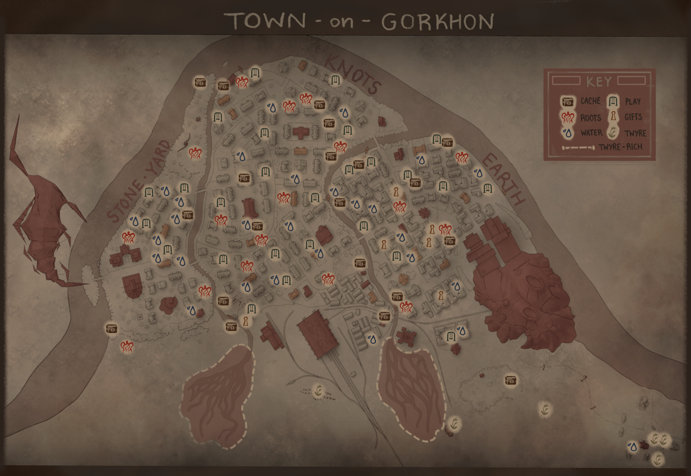

Bairros · Distritos · Pontos de Referência
A Cidade-no-Gorkhon não tem nome oficial. Existe nas margens do mundo — uma comunidade industrial encravada nas estepes russas, cortada ao meio pelo rio Gorkhon. À margem esquerda ficam os blocos de moradia, o comércio e as instituições. À margem direita, os Campos, onde a terra sangra e o Tauros é criado para o abate.
Para o Médico Artemy Burakh, cada bloco carrega uma memória da infância — e uma ameaça presente. Conhecer a geografia da Cidade não é curiosidade: é sobrevivência. Saber qual rota evita os infectados, onde estão os curandeiros, quem controla qual bairro — isso define quantas horas você tem no dia.
"A Cidade foi construída sobre os ossos da estepe. Cada rua é uma costela. O rio é sua veia principal. E algo, nas profundezas, ainda respira."
— Pathologic 2
⚕ Esquema aproximado — a infecção altera os blocos acessíveis a cada dia
O coração administrativo da Cidade: a Câmara Municipal, o Quartel Militar e o Hospital principal ficam aqui. É onde as decisões que afetam todos os outros bairros são tomadas — e onde as três famílias fundadoras se enfrentam em silêncio. Artemy terá que negociar nesse território com frequência, especialmente nos dias em que a Praga exige uma resposta oficial.
Vladislav Olgimsky Sr., popularmente conhecido como Big Vlad, é um dos Bound. Ele comanda a família Olgimsky e controla o Abatedouro , a maior e mais importante fonte de recursos e carne da Cidade. Embora se apresente como um líder pragmático e protetor severo da comunidade, ele é guiado pelo medo constante da revolta popular e do contágio da Praga. O segredo de Big Vlad é esconder ações moralmente questionáveis, como o fechamento do Termitário , onde trancou centenas de trabalhadores Kin para conter o surto inicial da doença. Sua história termina em culpa profunda por decisões que muitas vezes culminam em sacrifício próprio ou na transferência de seu poder para o filho, Vlad, o Jovem.
O maior distrito em população, com o mercado informal, habitações coletivas e os Dogheads — as crianças que operam como rede de informação e troca da Cidade. É aqui que o jogador encontra comida barata, rumores e as missões secundárias que revelam o tecido social da Cidade. A comunidade é solidária internamente mas profundamente desconfiada das instituições.
A terra sagrada da estepe, onde os Tauros são criados e onde a substância misteriosa que permeia a narrativa tem origem. É o território do pai de Artemy — e do conhecimento que ele tentou transmitir. Para o Médico, os Campos são tanto herança quanto responsabilidade: a cura para a Praga pode estar aqui, nas ervas que crescem sobre os ossos da terra.
O limite sul da Cidade, onde os mortos se acumulam à medida que a Praga avança. O Cemitério não é apenas um lugar de sepultamento — é uma fronteira simbólica entre a Cidade e o que a Praga vai conquistando dia a dia. Conforme os blocos infectados se expandem, o cemitério torna-se ponto de encontro com personagens que só aparecem no limiar entre mundos.
Os blocos residenciais da margem sul abrigam famílias operárias e os personagens secundários que têm missões ligadas ao cotidiano da Cidade. É aqui que vivem muitos dos NPCs que o jogador pode salvar — ou perder — ao longo dos doze dias. A densidade residencial torna a progressão da Praga nessa área especialmente devastadora.
A Cidade-no-Gorkhon não é um cenário. É um personagem. Ela adoece, resiste, se contrai. Aprender sua geografia é aprender sua linguagem — e quem não fala a língua de uma cidade morre perdido dentro dela.